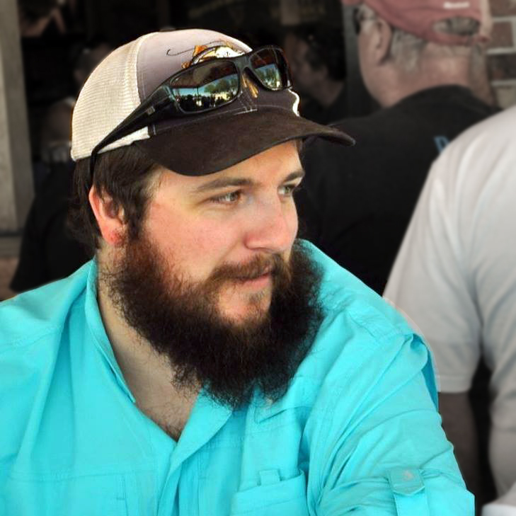

Seamus O’Hearn

About Me

Hi, my name is Seamus and I’m currently a software engineering student at Florida Gulf Coast University. Growing up I always enjoyed solving problems. Whether I was presented with a puzzle or a riddle, I was always up for the challenge and found joy in solving the problem. So naturally when I was first introduced to programming with Python during a class for my first degree, in computer animation, I was instantly hooked. It took a few years before I made the decision to return to school to learn more about this passion, but I’ve been loving every moment since.
When I’m not behind a computer desk working on anything, I am usually out on my kayak fishing. I'm lucky that the local waters here in Fort Myers, Florida have a vast variety of fish species to target as well as mostly calm waters compared to the other side of the state. I prefer fishing from a kayak over fishing from land or power boats because it’s a lot more peaceful, and I can get into areas you can’t take a normal boat and can’t access from shore.
If you have any questions about any of my current or past projects, or want to chat about fishing, feel free to reach out to me through any of the ways listed on my contact page.
About this site
This site is used to showcase my current and past projects as I continue to learn about software engineering at Florida Gulf Coast University. I will routinely update the site as I progress through the degree program with completed and in progress long term projects on the projects page.
Accessibility
This site was made with accessibility for everyone in mind. In order to allow this site to be easily accessible by anyone the following things have been done.
- All images have alternative text for those who use screen readers.
- Overall layout has been kept simple and easy to follow.
- Content is easy to read and (hopefully) free of spelling and grammar errors.
- Text sufficiently contrasts with the background behind it according to the WAVE Web Accessibility Tool for those with visual impairments.
- All links to PDFs are clearly labeled since they aren't always compatible with accessibility programs.
If I can do anything else to help make the site accessible to all, please let me know.